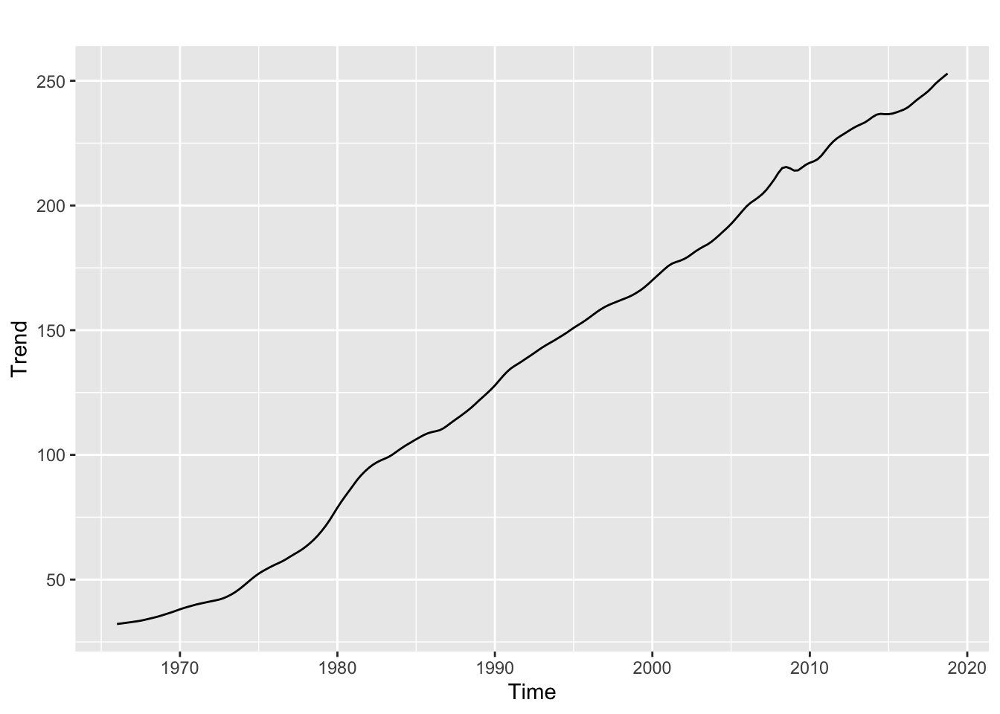

Project
library(vars)## Loading required package: MASS## Loading required package: strucchange## Loading required package: zoo##
## Attaching package: 'zoo'## The following objects are masked from 'package:base':
##
## as.Date, as.Date.numeric## Loading required package: sandwich## Loading required package: urca## Loading required package: lmtestlibrary(dplyr)##
## Attaching package: 'dplyr'## The following object is masked from 'package:MASS':
##
## select## The following objects are masked from 'package:stats':
##
## filter, lag## The following objects are masked from 'package:base':
##
## intersect, setdiff, setequal, unionlibrary(ggplot2)
library(forecast)
library(tseries)##
## 'tseries' version: 0.10-47
##
## 'tseries' is a package for time series analysis and
## computational finance.
##
## See 'library(help="tseries")' for details.FinalData = read.csv(file.choose(), header = TRUE)
# Following is the explanation for the variables.
# GDPC1 is the Real Gross Domestic Product quarterly data.
# FGOVTR is the Federal Government Tax Receipts quarterly data.
# NETEXP is the Net Export quarterly data.
# MDOAH is the Mortgage Debt Outstanding quarterly data.
# CPI is the Comsumers Price Index quarterly data.
# DGS10 is the 10-Year Treasury Constant Maturity Rate quarterly data.
# unrate is the unemployment rate quarterly data.
# IP is the industrial Production quarterly data.
# PD is the Public Debt quarterly data.
summary(FinalData)## DATE GDPC1 FGOVTR FFR
## 1/1/1966: 1 Min. : 4407 Min. : 98.69 Min. : 0.07333
## 1/1/1967: 1 1st Qu.: 6722 1st Qu.: 311.39 1st Qu.: 2.05250
## 1/1/1968: 1 Median : 9685 Median : 640.37 Median : 5.24833
## 1/1/1969: 1 Mean :10547 Mean : 834.39 Mean : 5.26140
## 1/1/1970: 1 3rd Qu.:14996 3rd Qu.:1291.31 3rd Qu.: 7.39833
## 1/1/1971: 1 Max. :18784 Max. :2042.91 Max. :17.78000
## (Other) :206
## NETEXP MDOAH CPI DGS10
## Min. :-805.63 Min. : 356093 Min. : 32.05 Min. : 1.564
## 1st Qu.:-499.99 1st Qu.: 1280304 1st Qu.: 70.85 1st Qu.: 4.271
## Median :-102.88 Median : 4013639 Median :140.27 Median : 6.178
## Mean :-233.35 Mean : 5904677 Mean :136.95 Mean : 6.347
## 3rd Qu.: -16.37 3rd Qu.:11831398 3rd Qu.:197.06 3rd Qu.: 7.952
## Max. : 21.58 Max. :15440761 Max. :252.76 Max. :14.838
##
## unrate IP PD
## Min. : 3.400 Min. : 34.48 Min. : 30.60
## 1st Qu.: 4.858 1st Qu.: 50.19 1st Qu.: 35.59
## Median : 5.717 Median : 65.20 Median : 55.71
## Mean : 6.059 Mean : 71.57 Mean : 56.94
## 3rd Qu.: 7.208 3rd Qu.: 95.46 3rd Qu.: 64.25
## Max. :10.667 Max. :110.32 Max. :105.19
## CPI = ts(FinalData$CPI, frequency = 4, start = c(1966,1,1))
# Decomposition of CPI data.
Decompose_CPI = stl(CPI, s.window = "per")
autoplot(Decompose_CPI)
# This is the trend of the CPI
DTrend_CPI = trendcycle(Decompose_CPI)
autoplot(DTrend_CPI)+ ylab("Trend")
# There is a strong upward trend.
# This is a seasonality of the CPI
DSeason_CPI = seasonal(Decompose_CPI)
autoplot(DSeason_CPI)+ ylab("Seasonality")
# It's clear that the seasonality is very weak or doesn't exist.
# This is a deseasonalized plot of the CPI
Deseasonal_CPI = seasadj(Decompose_CPI)
autoplot(Deseasonal_CPI)+ ylab("Deseasonal CPI")
# Using auto.ARIMA to find appropriate ARIMA model.
CPI_ARIMA = auto.arima(CPI)
checkresiduals(CPI_ARIMA)##
## Ljung-Box test
##
## data: Residuals from ARIMA(0,1,1)(1,0,1)[4] with drift
## Q* = 12.248, df = 4, p-value = 0.0156
##
## Model df: 4. Total lags used: 8# This is the residual plot, ACF and the histogram of the residuals.
# The residual plot indicates that the mean of the residuals are 0.
# The ACF of the residuals are below the confidence interval.
# The histogram of the residuals are under the normal distribution.
# From the followin evidence, one can conclude that the residuals are white noise.
# Forecasting with ARIMA model selected by auto.ARIMA
CPI_ARIMA_Forecast = forecast(CPI_ARIMA, h =3)
CPI_ARIMA_Forecast## Point Forecast Lo 80 Hi 80 Lo 95 Hi 95
## 2019 Q1 253.7208 252.7230 254.7187 252.1948 255.2469
## 2019 Q2 254.7666 253.0451 256.4882 252.1338 257.3995
## 2019 Q3 255.8209 253.6002 258.0417 252.4246 259.2173autoplot(CPI_ARIMA_Forecast)
# Using (0,1,1) ARIMA fucntion with the drift to forecast the CPI
Final_Model1 = Arima(CPI, order = c(0,1,1), include.drift = FALSE)
Question2B = forecast(Final_Model1, h =3)
Question2B## Point Forecast Lo 80 Hi 80 Lo 95 Hi 95
## 2019 Q1 252.9681 251.6523 254.2839 250.9558 254.9805
## 2019 Q2 252.9681 250.4448 255.4914 249.1091 256.8272
## 2019 Q3 252.9681 249.6511 256.2851 247.8952 258.0411# Unlike the Auto.Arima function, the (0,1,1) ARIMA model with a drift have identical forecast.
# The difference between both models becomes bigger as the time progresses.
# In the 2019 Q1 forecast, the difference was meager 0.7527.
autoplot(Question2B)
checkresiduals(Final_Model1)##
## Ljung-Box test
##
## data: Residuals from ARIMA(0,1,1)
## Q* = 26.98, df = 7, p-value = 0.000336
##
## Model df: 1. Total lags used: 8# This is the residual plot, ACF and the histogram of the residuals.
# It's hard to conclude that the mean of the residuals are zero from the residual plot.
# The ACF of the residuals are above the confidence interval.
# The histogram of the residuals are under the normal distribution.
# From the followin evidence, residuals are not white noise. The residual of the model is biased.
# Effect of drift in the ARIMA model
Final_Model3 = Arima(CPI, order = c(2,1,3), include.drift = TRUE)
Final_Model4 = Arima(CPI, order = c(2,1,3), include.drift = FALSE)
Question2C1 = forecast(Final_Model3, h =3)
Question2C2 = forecast(Final_Model4, h =3)
Question2C1## Point Forecast Lo 80 Hi 80 Lo 95 Hi 95
## 2019 Q1 253.8050 252.8181 254.7920 252.2957 255.3144
## 2019 Q2 254.9694 253.2857 256.6530 252.3944 257.5443
## 2019 Q3 256.0699 253.8895 258.2504 252.7352 259.4047Question2C2## Point Forecast Lo 80 Hi 80 Lo 95 Hi 95
## 2019 Q1 253.7054 252.7076 254.7032 252.1794 255.2314
## 2019 Q2 254.7572 253.0339 256.4805 252.1216 257.3928
## 2019 Q3 255.7725 253.5202 258.0248 252.3279 259.2171autoplot(Question2C1)autoplot(Question2C2)# Fitting a linear trend model with an ARIMA error structure to the assigned Variable
TrendCPI = c(1:length(CPI))
# the TrendCPI variable is simple counting. Thus the trend is simple counting.
fit = auto.arima(CPI, xreg = TrendCPI)
fcast = forecast(fit, xreg= c(213,214,215))
fcast## Point Forecast Lo 80 Hi 80 Lo 95 Hi 95
## 2019 Q1 253.7250 252.7316 254.7185 252.2057 255.2444
## 2019 Q2 254.7740 253.0719 256.4761 252.1709 257.3771
## 2019 Q3 255.8234 253.6477 257.9991 252.4959 259.1509 # Since the TrendCPI is simple counting, It's logical to increase the count.
autoplot(fcast)# Time Series Regression model
CPItrendRegression = tslm(CPI ~ trend+season)
summary(CPItrendRegression)##
## Call:
## tslm(formula = CPI ~ trend + season)
##
## Residuals:
## Min 1Q Median 3Q Max
## -9.4006 -2.5182 0.6727 2.7547 13.5339
##
## Coefficients:
## Estimate Std. Error t value Pr(>|t|)
## (Intercept) 17.389368 0.791456 21.971 <2e-16 ***
## trend 1.123358 0.004908 228.869 <2e-16 ***
## season2 -0.058276 0.849478 -0.069 0.945
## season3 -0.022457 0.849521 -0.026 0.979
## season4 -0.210368 0.849591 -0.248 0.805
## ---
## Signif. codes: 0 '***' 0.001 '**' 0.01 '*' 0.05 '.' 0.1 ' ' 1
##
## Residual standard error: 4.373 on 207 degrees of freedom
## Multiple R-squared: 0.9961, Adjusted R-squared: 0.996
## F-statistic: 1.31e+04 on 4 and 207 DF, p-value: < 2.2e-16 # Compared to first quarter, season 2 and 3 is expected to be slightly lower than the trend.
# The low coefficient for season 2 and 3 indicate the seasonality is weak or doesn't exist.
# The high p-value for the seasons indicate that there is no seasonality.
# However, there is strong positive trend for CPI.
# Forecasting with Regression model
CPIRegressionForecast = forecast(CPItrendRegression, h =3)
CPIRegressionForecast## Point Forecast Lo 80 Hi 80 Lo 95 Hi 95
## 2019 Q1 256.6645 250.9490 262.3801 247.9000 265.4291
## 2019 Q2 257.7296 252.0140 263.4452 248.9650 266.4942
## 2019 Q3 258.8888 253.1732 264.6044 250.1242 267.6534 # Comparing accuracy of Regression & ARIMA error structure model
accuracy(CPIRegressionForecast, d =1, D =0)## ME RMSE MAE MPE MAPE MASE
## Training set -9.723207e-16 4.321008 3.361012 0.1059919 4.877736 2.925139
## ACF1
## Training set 0.9570962 accuracy(fcast, d =1 , D=0)## ME RMSE MAE MPE MAPE MASE
## Training set -0.03736094 0.7678488 0.4978913 -0.16188 0.4998526 0.4333221
## ACF1
## Training set -0.004795397# d =1 & D =0 is the default. The default will be used throughout the project for consistency.
# The RMSE for Auto-arima model was lower. Thus I've concluded that the Auto-arima
# is more accurate than the Simple Regression model.
# # Fitting a Vector Autoregressive model using p = 1 (only one lag) with highly correated variable.
summary(FinalData)## DATE GDPC1 FGOVTR FFR
## 1/1/1966: 1 Min. : 4407 Min. : 98.69 Min. : 0.07333
## 1/1/1967: 1 1st Qu.: 6722 1st Qu.: 311.39 1st Qu.: 2.05250
## 1/1/1968: 1 Median : 9685 Median : 640.37 Median : 5.24833
## 1/1/1969: 1 Mean :10547 Mean : 834.39 Mean : 5.26140
## 1/1/1970: 1 3rd Qu.:14996 3rd Qu.:1291.31 3rd Qu.: 7.39833
## 1/1/1971: 1 Max. :18784 Max. :2042.91 Max. :17.78000
## (Other) :206
## NETEXP MDOAH CPI DGS10
## Min. :-805.63 Min. : 356093 Min. : 32.05 Min. : 1.564
## 1st Qu.:-499.99 1st Qu.: 1280304 1st Qu.: 70.85 1st Qu.: 4.271
## Median :-102.88 Median : 4013639 Median :140.27 Median : 6.178
## Mean :-233.35 Mean : 5904677 Mean :136.95 Mean : 6.347
## 3rd Qu.: -16.37 3rd Qu.:11831398 3rd Qu.:197.06 3rd Qu.: 7.952
## Max. : 21.58 Max. :15440761 Max. :252.76 Max. :14.838
##
## unrate IP PD
## Min. : 3.400 Min. : 34.48 Min. : 30.60
## 1st Qu.: 4.858 1st Qu.: 50.19 1st Qu.: 35.59
## Median : 5.717 Median : 65.20 Median : 55.71
## Mean : 6.059 Mean : 71.57 Mean : 56.94
## 3rd Qu.: 7.208 3rd Qu.: 95.46 3rd Qu.: 64.25
## Max. :10.667 Max. :110.32 Max. :105.19
## cor(FinalData$CPI, FinalData$GDPC1)## [1] 0.9888602# The CPI & Real Gross Domestic Product has high correation.
# Modeling a Vector Autoregressive model
RGDP = ts(FinalData$GDPC1, frequency = 4, start = c(1966,1,1))
options(scipen = 999)
#VARselect(CPI, RGDP, lag.max = 4, type = 'const')
var = VAR(cbind(CPI, RGDP), p =1, type = 'const')
summary(var)##
## VAR Estimation Results:
## =========================
## Endogenous variables: CPI, RGDP
## Deterministic variables: const
## Sample size: 211
## Log Likelihood: -1460.954
## Roots of the characteristic polynomial:
## 1.001 0.9969
## Call:
## VAR(y = cbind(CPI, RGDP), p = 1, type = "const")
##
##
## Estimation results for equation CPI:
## ====================================
## CPI = CPI.l1 + RGDP.l1 + const
##
## Estimate Std. Error t value Pr(>|t|)
## CPI.l1 1.00206479 0.00561307 178.523 < 0.0000000000000002 ***
## RGDP.l1 -0.00001474 0.00008886 -0.166 0.868
## const 0.91930934 0.21807148 4.216 0.0000371 ***
## ---
## Signif. codes: 0 '***' 0.001 '**' 0.01 '*' 0.05 '.' 0.1 ' ' 1
##
##
## Residual standard error: 0.8347 on 208 degrees of freedom
## Multiple R-Squared: 0.9999, Adjusted R-squared: 0.9999
## F-statistic: 7.138e+05 on 2 and 208 DF, p-value: < 0.00000000000000022
##
##
## Estimation results for equation RGDP:
## =====================================
## RGDP = CPI.l1 + RGDP.l1 + const
##
## Estimate Std. Error t value Pr(>|t|)
## CPI.l1 0.530866 0.490471 1.082 0.2803
## RGDP.l1 0.995367 0.007764 128.200 <0.0000000000000002 ***
## const 44.409423 19.055099 2.331 0.0207 *
## ---
## Signif. codes: 0 '***' 0.001 '**' 0.01 '*' 0.05 '.' 0.1 ' ' 1
##
##
## Residual standard error: 72.94 on 208 degrees of freedom
## Multiple R-Squared: 0.9997, Adjusted R-squared: 0.9997
## F-statistic: 3.749e+05 on 2 and 208 DF, p-value: < 0.00000000000000022
##
##
##
## Covariance matrix of residuals:
## CPI RGDP
## CPI 0.6968 7.955
## RGDP 7.9553 5320.233
##
## Correlation matrix of residuals:
## CPI RGDP
## CPI 1.0000 0.1307
## RGDP 0.1307 1.0000# The responses up to 3 periods for both variables due to a one unit shock in each variable
# 1 unit shock for GDP
var1=irf(x=var, impulse="RGDP", boot=TRUE, n.ahead = 3)
var1##
## Impulse response coefficients
## $RGDP
## CPI RGDP
## [1,] 0.000000000 72.31464
## [2,] -0.001066213 71.97958
## [3,] -0.002129688 71.64552
## [4,] -0.003190433 71.31243
##
##
## Lower Band, CI= 0.95
## $RGDP
## CPI RGDP
## [1,] 0.00000000 60.12154
## [2,] -0.01930724 59.76492
## [3,] -0.03851747 58.05995
## [4,] -0.05763668 55.44375
##
##
## Upper Band, CI= 0.95
## $RGDP
## CPI RGDP
## [1,] 0.00000000 82.71595
## [2,] 0.04199400 81.83716
## [3,] 0.08093424 80.60303
## [4,] 0.11705759 79.41672 # It's clear that shock in the GDP will have little or no impact to the CPI
# 1 unit shock for CPI
var2=irf(x=var, impulse="CPI", boot=TRUE, n.ahead = 3)
var2##
## Impulse response coefficients
## $CPI
## CPI RGDP
## [1,] 0.8347433 9.53028
## [2,] 0.8363264 9.92926
## [3,] 0.8379068 10.32723
## [4,] 0.8394847 10.72420
##
##
## Lower Band, CI= 0.95
## $CPI
## CPI RGDP
## [1,] 0.6371564 -12.40135
## [2,] 0.6377880 -10.81001
## [3,] 0.6295176 -9.27356
## [4,] 0.6161490 -7.78998
##
##
## Upper Band, CI= 0.95
## $CPI
## CPI RGDP
## [1,] 1.102478 41.30583
## [2,] 1.101052 42.30355
## [3,] 1.097831 43.25420
## [4,] 1.094828 44.71936# However, CPI's shock will impact the GDP.
# Using AIC criteria to determine the optimal lags in the VAR and
# generating forecast values for the assigned variable up to 3 periods forward
fvar = forecast(var, h=3)
# This code has Error : Error in accuracy
# Needs to be Fixed in the future.
#summary(fvar, d=1,D=0)
# 3 Point Forecast for CPI & GDP from the Vector Autoregressive Model
fvar## CPI
## Point Forecast Lo 80 Hi 80 Lo 95 Hi 95
## 2019 Q1 253.9233 252.8535 254.9930 252.2872 255.5593
## 2019 Q2 255.0886 253.5743 256.6029 252.7726 257.4045
## 2019 Q3 256.2549 254.3985 258.1113 253.4158 259.0941
##
## RGDP
## Point Forecast Lo 80 Hi 80 Lo 95 Hi 95
## 2019 Q1 18875.11 18781.63 18968.59 18732.15 19018.07
## 2019 Q2 18966.86 18834.92 19098.81 18765.07 19168.65
## 2019 Q3 19058.81 18897.52 19220.10 18812.14 19305.49 # Auto.ARMA Model & VAR model accuracy comparison
accuracy(fvar, d=1, D=0)## ME RMSE MAE
## CPI Training set 0.0000000000000006735804 0.8287879 0.5443487
## RGDP Training set -0.0000000000000301718563 72.4195392 50.9553132
## MPE MAPE MASE ACF1
## CPI Training set -0.08845486 0.5382390 0.4737548 0.3592322
## RGDP Training set -0.01274135 0.5458977 0.6022113 0.3443815# There is no seasonality, thus the code requires to put d =1 and D = 0.
accuracy(CPI_ARIMA_Forecast)## ME RMSE MAE MPE MAPE
## Training set 0.003907738 0.7693755 0.4884155 -0.08925105 0.4603931
## MASE ACF1
## Training set 0.1145306 -0.004847103# RMSE for the Var model was higher, thus ARIMA has higher accuracy.
# Adding a principal component with all of the variables
FGOVTR = ts(FinalData$FGOVTR, frequency = 4, start = c(1966,1,1))
FFR = ts(FinalData$FFR, frequency = 4, start = c(1966,1,1))
NETEXP = ts(FinalData$NETEXP, frequency = 4, start = c(1966,1,1))
MDOAH = ts(FinalData$MDOAH, frequency = 4, start = c(1966,1,1))
DGS10 = ts(FinalData$DGS10, frequency = 4, start = c(1966,1,1))
unrate = ts(FinalData$unrate, frequency = 4, start = c(1966,1,1))
IP = ts(FinalData$IP, frequency = 4, start = c(1966,1,1))
PD = ts(FinalData$PD, frequency = 4, start = c(1966,1,1))
pca = prcomp(cbind(RGDP,FGOVTR,FFR,NETEXP,MDOAH,DGS10,unrate, IP, PD))
# This is the principal component of the all of the values excpet CPI.
summary(pca)## Importance of components:
## PC1 PC2 PC3 PC4 PC5 PC6 PC7 PC8
## Standard deviation 5267381 1084 107.4 85.63 6.723 2.803 1.941 1.342
## Proportion of Variance 1 0 0.0 0.00 0.000 0.000 0.000 0.000
## Cumulative Proportion 1 1 1.0 1.00 1.000 1.000 1.000 1.000
## PC9
## Standard deviation 0.5789
## Proportion of Variance 0.0000
## Cumulative Proportion 1.0000plot(pca$x[,1])pc = ts(pca$x[,1], frequency = 4, start = c(1966,1,1))
summary(pc)## Min. 1st Qu. Median Mean 3rd Qu. Max.
## -5548587 -4624375 -1891038 0 5926723 9536088plot(pc)# Forecasting with PC componenet model.
var3 = VAR(cbind(CPI, pc), p =1, type = 'const')
fvar2 = forecast(var3, h =3)
autoplot(fvar2)fvar2## CPI
## Point Forecast Lo 80 Hi 80 Lo 95 Hi 95
## 2019 Q1 253.8980 252.8307 254.9653 252.2657 255.5303
## 2019 Q2 255.0371 253.5255 256.5487 252.7254 257.3489
## 2019 Q3 256.1764 254.3224 258.0304 253.3409 259.0118
##
## pc
## Point Forecast Lo 80 Hi 80 Lo 95 Hi 95
## 2019 Q1 9653725 9528440 9779010 9462118 9845332
## 2019 Q2 9771659 9594936 9948382 9501385 10041933
## 2019 Q3 9889889 9674003 10105774 9559720 10220057# The Vector Autoregressive model with Principal component suggest that
# For first quarter of 2019, the CPI will be 253.8980.
# The exact meaning of the Principal component is hard to interpert.
# Comparing the accuracy
accuracy(fvar2,d=1, D=0)## ME RMSE MAE
## CPI Training set -0.0000000000000008418657 0.8268766 0.5443384
## pc Training set 0.0000000000217839816749 97062.9507340 59700.3713457
## MPE MAPE MASE ACF1
## CPI Training set -0.0755122 0.5244213 0.4737458 0.3555163
## pc Training set 0.6037213 2.6126501 0.6971980 0.9424168accuracy(fvar,d=1, D=0)## ME RMSE MAE
## CPI Training set 0.0000000000000006735804 0.8287879 0.5443487
## RGDP Training set -0.0000000000000301718563 72.4195392 50.9553132
## MPE MAPE MASE ACF1
## CPI Training set -0.08845486 0.5382390 0.4737548 0.3592322
## RGDP Training set -0.01274135 0.5458977 0.6022113 0.3443815#The RMSE for the principle component RMSE is lower.
#Thus, it's preferrable to use the model with the PC component